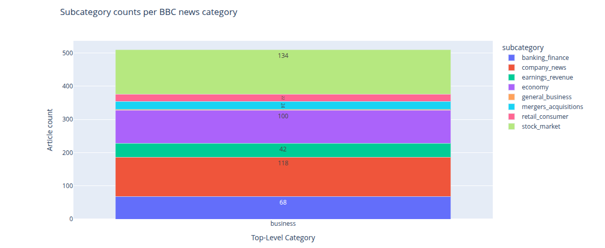

The BBC news is a well-known source of news that covers a wide range of topics, including politics, business, technology, science, health, entertainment, and sports. The news articles are written in a formal and objective style, and they are intended to inform the public about current events and issues. The BBC news articles are published on the BBC website and are available to the public for free. The articles are written by professional journalists and are edited by editors to ensure accuracy.
A BBC dataset is available from UCD (http://mig.ucd.ie/datasets/bbc.html). The goal is to use the full dataset and classify each existing category into sub-categories: - Breakdown "Buisness" into stock maket, company news, mergers and acquisitions etc. - Breakdown "Entertainment" into movies, music, literature, personality etc. - Breakdown "Sports" into the type of sport: cricket, football, Olympics etc.
The techniques used in this project include text processing & ingestion, Kewword extraction, topic modelling with Latent Dirichlet Allocation (LDA), subcategory classification via and keyword matching.
Documents are automatically loaded, labelled,
and subcatgorized high-level (e.g., business)
into fine-grained subcategories (e.g., stock
market, company news, mergers and acquisitions).
The method get_subcategories_files()
method returns a structured DataFrame linking
filenames to predicted subcategories.
The figure below shows the
subcategorization of the 500 BBC news file
with top-level category Business. It is possible
to see that the most common subcategory is stock
market (134), followed by company news (118),
economy (100), and banking finance (68).
